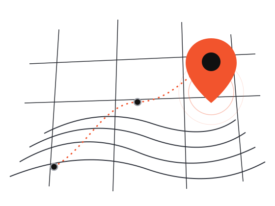
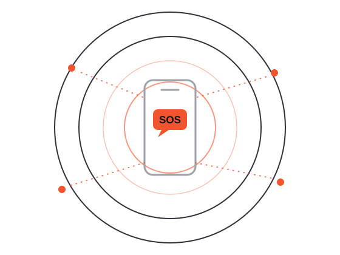

Reporta lo que falta,
mira dónde ayudar
Abrir mapa

Conectados para ayudarnos
Cuando un desastre natural lo arrasa todo, la primera ayuda no llega de fuera: está al lado. Nexo conecta necesidades, voluntarios y recursos en tiempo real.

Así funciona Nexo